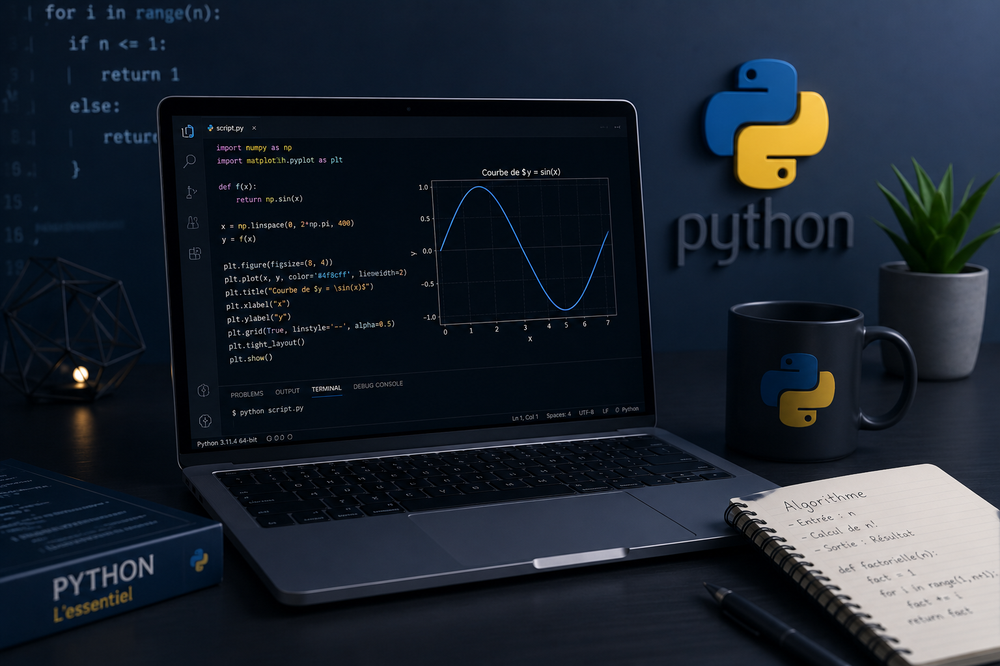

Développement de programmes en Python pour résoudre des problèmes mathématiques, automatiser des tâches et appliquer des algorithmes.
Retour aux projets
Présentation du projet Python
Développer des scripts Python capables de résoudre des problèmes mathématiques et d'automatiser certaines opérations.
• Calculs numériques
• Gestion de fichiers
• Algorithmes
• Fonctions Python
• Exercices pratiques
Maîtrise des bases du langage Python, des boucles, fonctions, listes, dictionnaires et modules.
Environnement de développement
✔ Python 3
✔ Algorithmes
✔ Structures de données
✔ Calcul scientifique
✔ VS Code
✔ PyCharm
✔ Jupyter Notebook
✔ Git
Compétences développées
Renforcement de la logique algorithmique et de la résolution de problèmes.
Création de scripts permettant de simplifier plusieurs tâches répétitives.
Ce projet m'a permis de consolider mes bases en programmation Python et de préparer des projets plus avancés.